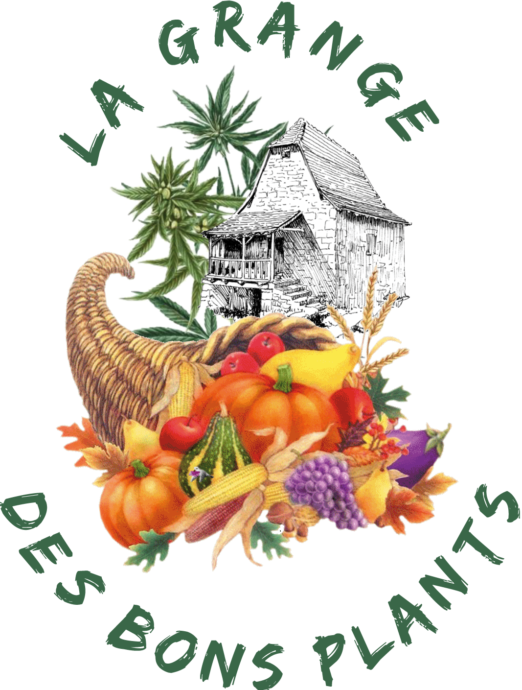

Producteur de plants de
Légumes et de Fleurs BIO
Élevés à l'eau de source
Robert PRANGÈRE
La Blaymie 46120 AYNAC
06 76 97 31 72
lagdbp@sfr.fr
Élevés à l'eau de source
Robert PRANGÈRE
La Blaymie 46120 AYNAC
06 76 97 31 72
lagdbp@sfr.fr
Certifié par FR-BIO-01 AGRICULTURE FRANCE
Du début du printemps à la fin Juin
Du Lundi au Vendredi - 17h à 19h